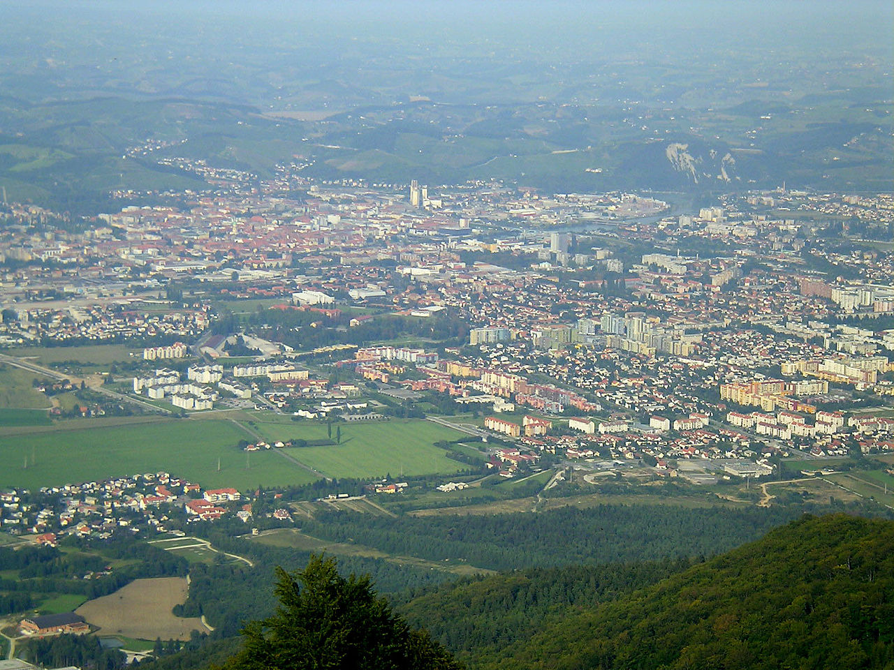

World Youth Chess Championship 2012 The view over mariborFrom 8 till 18 November I played the World Youth Chess Championship that was held in Maribor, Slovenia. I went there with the other Dutch players who also took part (Robby Kevlisvili, Anna-Maja Kazarian, Tjark Vos, Benjamin Bok and Lisa Schut). We had 2 coaches with us (GM Vladimir Chuchelov, and IM Merijn van Delft). My coach was Merijn van Delft. We played 11 rounds with one rest day and one double round day. I was placed 23th for this tournament so I wanted to get 7.5 points We went everyday with the skylift down to the tournament hall with a beautifull sight over Maribor. We also had a nice appartement where I could play card games and have fun with the other Dutch players . The outward voyage went very well till the bus had like 2 hours delay because we needed to cross the border from Croatia to Slovenia. We came at about 6 o'clock in Maribor where we played some blitz games and we ate and than we got early to bed. In the first round I played against Markocic Tine rated 1808. I was black and I played the Caro-Kann. He played for a draw by exchanging on d5. After the opening I got a comfortable position and after a few mistakes of my opponent I got an easy point. In the second round I played against Rohrer Christophe rated 1976. I was white and I prepared a variation of the Taimanov that has recently became popular. I sacrificed 2 pawns but it wasn't totally correct and at some point my opponent could have gained an advantage. However it was a difficult position and the good move was not easy to find. My opponent instead made a mistake and after a nice move I won a piece and later also the game. In the third round I played against Chandran Kapil rated 2096. I was black and I saw that he played a less critical variation against the Caro-Kann. I got the preparation on the board and i had a safe position. Then I made an bad pawn move after which he got a clear advantage. Only with a computer move I could have equalised the position. However I didn't see the move and he sacrificed a knight for three pawn. I needed to exchange queens and in the endgame he had 3 really dangerous passed pawns so I immediatelly sacrificed my knight back for 2 pawns. It wasn't the best move but I think that it was the best practical chance. I think he thought that everything was winning and he became lazy and just played a move but that was a dubious move. And after some accurate moves I gained a draw. In the fourth round I played against Thybo Jesper Sondergaard rated 2001. I got the Schliemann variation from the Ruy Lopez on the board. I didn't really know it so good so I played a less good line. We got in an equal endgame. Then suddenly my opponent got sick. He went quickly to the toilet and after he came back he played a few more moves and then resigned! After the game he said he was too sick to play further. When I later analysed the game it seemed like I was winning in the end position. The next day was the double round day so I stood up early in the morning to prepare. I played against Ali Mirandi Cemil Can rated 2367. I prepared a variation of the Sicilian Defence because he played a less critical variation. We had a pretty good preparation but he knew the lines a little bit further because he already played this line for his whole live. After the first new move i played the most logical move but it was a little mistake and after another mistake I quickly lost. The sixth round started at 5:00 P.M. and I was pretty tired so I didn't play that well the next round. I played against Zamengo Fulvio rated 2072 I played 1.d4 because I saw in the preparation that my opponent didn't really know it very well. Soon after the opening I got an almost winning position. Then I started to make little mistakes and after good defence of my opponent the position was only slightly better for me. Then I even made another mistakes in the endgame after which my opponent even stood a little bit better. I offered him then a draw and because we were both tired he accepted it. On the rest day we played soccer with some kids from Macedonia and Slovenija and we won with 15-11. I also played Card games and blitz games with Robby Kevlishvili, Anna-Maja Kazarian and Tjark Vos. On the seventh round I played against Horton Andrew P rated 1968. I didn't came really nice out of the opening so I decided to sacrifice a pawn but it wasn't enough compensation. I was still a little bit sleepy from the rest day and I wasn't sharp and in a slightly worse position I made a horrible blunder and I quickly lost. In the eigth round I played against Adam C Taylor rated 1946. I had a long preparation in the Dragon and I got my preparation on the board! My opponent didn't know the opening very well and i was already much better after the opening. He escaped in an endgame a pawn down. He had some drawing chances but then he suddenly made a blunder and lost a piece. In the ninth round I played against Azarya Jodi Setyaki rated 2045. I played the Caro-Kann and came out of the opening with a slight advantage. However after some slight inacurracies the position became close to equal again. Then suddenly I made a big blunder because I wasn't concentrated that well. I lost the exchange and my opponent played well after that so I lost. In the tenth round I played against Gonzalez Andres Felipe rated 1988. I played the Maroczy Bind against the accelerated dragon and I had a nice but stable plus. Then I started attacking and I could win in a computer like way but I missed it. The position then became equal again but in timetrouble I made some mistakes and my opponent got the advantage. However my opponent didn't find the correct move and the position became equal and soon a draw was agreed. In the last round I played against Zirkelbach Maj rated 1732. I got against a dragon on the board and against my opponent didn't know what to do! My opponent made some mistakes and I soon won with a convincing attack. On the return we went at half twelve p.m. to the airport where we needed to wait like 6 hours before the flight left. I slept at the airport while the others played card games. Then the airplaine had 1 hour delay but we came safely at Schiphol airport and after a 2 and half hours train journey I finaly was home after a 15 hour journey. I was back in Groningen at four o'clock in the afternoon and slept till the next day. Altough my achievement wasn't very good, I really liked the tournament and I will participate next year too. |